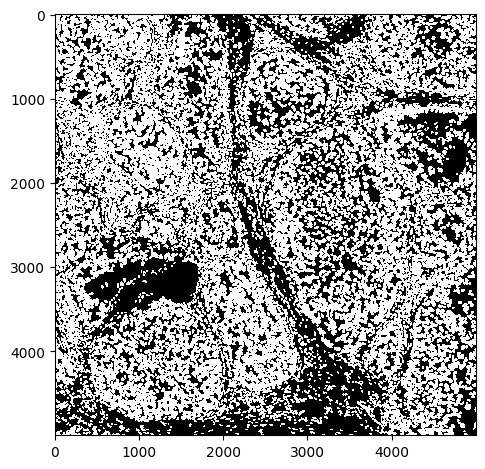
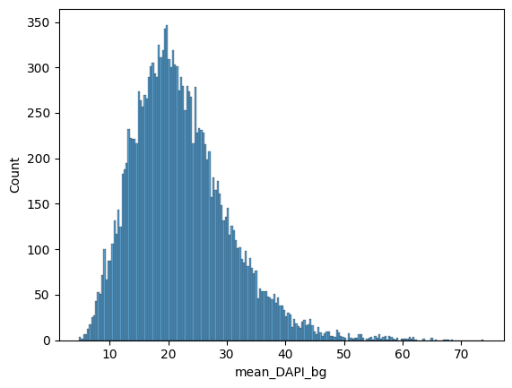
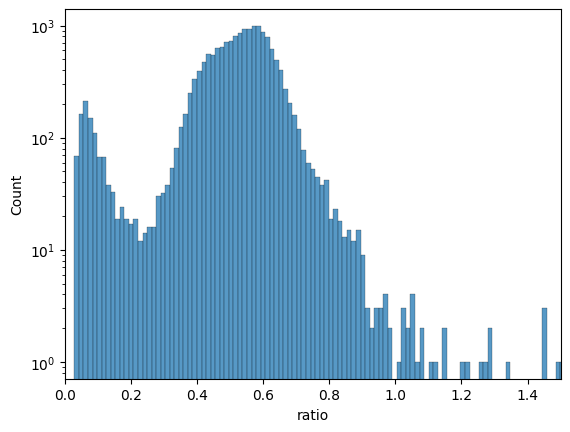
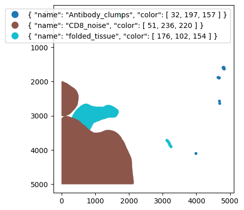

Image single-cell analysis#
In this tutorial I will show you how to perform quality control on your image processing and segmentation results.
#lets take a quick look
import skimage.io as io
import numpy as np
import opendvp as dvp
import napari
import seaborn as sns
import matplotlib.pyplot as plt
import pandas as pd
import geopandas as gpd
Part 1: Visualize segmentation in QuPath#
QuPath is a great piece of software created to allow users to see their images in a smooth manner.
Here is our demo data, this is how it should look like
! tree
.
├── Tutorial_1.ipynb
├── data
│ ├── image
│ │ └── mIF.ome.tif
│ ├── manual_artefact_annotations
│ │ └── artefacts.geojson
│ ├── quantification
│ │ └── quant.csv
│ └── segmentation
│ └── segmentation_mask.tif
└── outputs
└── segmentation_for_qupath.geojson
7 directories, 6 files
# let's perform some quick QC
path_to_segmentation = "data/segmentation/segmentation_mask.tif"
seg = io.imread(path_to_segmentation)
print(f"Number of pixels in x,y: {seg.shape}")
print(f"Number of segmented objects {np.unique(seg).size -1}")
Number of pixels in x,y: (5000, 5000)
Number of segmented objects 16808
#quick look
io.imshow(seg, vmax=1)
<matplotlib.image.AxesImage at 0x106a77d10>

Let’s visualize interactively in Napari or Qupath#
For Napari#
#load image
image = io.imread("data/image/mIF.ome.tif")
# this should produce a napari window with image and segmentation mask
viewer = napari.Viewer()
viewer.add_image(image, name="mIF_image")
viewer.add_labels(seg, name='Segmentation')
<Labels layer 'Segmentation' at 0x2b9e33890>
For QuPath#
# transform mask into shapes
gdf = dvp.io.segmask_to_qupath(path_to_segmentation, simplify_value=1, save_as_detection=True)
INFO no axes information specified in the object, setting `dims` to: ('y', 'x')
13:18:26.98 | INFO | Simplifying the geometry with tolerance 1
gdf.head()
| geometry | objectType | |
|---|---|---|
| label | ||
| 1 | POLYGON ((60 43.5, 54 43.5, 46.5 39, 42.5 30, ... | detection |
| 2 | POLYGON ((134 19.5, 129 19.5, 126 15.5, 119 11... | detection |
| 3 | POLYGON ((167 31.5, 148 33.5, 142 30.5, 137.5 ... | detection |
| 4 | POLYGON ((188 13.5, 178 13.5, 167 7.5, 160.5 1... | detection |
| 5 | POLYGON ((235 48.5, 231 47.5, 220 39.5, 202.5 ... | detection |
gdf.to_file("outputs/segmentation_for_qupath.geojson")
This file you just drag and drop into qupath after you have loaded the image.
Quant to adata#
adata = dvp.io.quant_to_adata("data/quantification/quant.csv")
15:14:06.74 | INFO | Detected 0 in 'CellID' — shifting all values by +1 for 1-based indexing.
15:14:06.75 | INFO | 16808 cells and 15 variables
adata.obs
| CellID | Y_centroid | X_centroid | Area | MajorAxisLength | MinorAxisLength | Eccentricity | Orientation | Extent | Solidity | |
|---|---|---|---|---|---|---|---|---|---|---|
| 0 | 1 | 17.612598 | 53.337008 | 1270.0 | 48.198269 | 36.841132 | 0.644782 | 0.359469 | 146.669048 | 0.949178 |
| 1 | 2 | 6.598958 | 126.006944 | 576.0 | 45.835698 | 18.372329 | 0.916152 | 1.513685 | 113.112698 | 0.886154 |
| 2 | 3 | 17.416667 | 156.656504 | 984.0 | 40.751104 | 31.700565 | 0.628380 | -1.528462 | 121.396970 | 0.955340 |
| 3 | 4 | 4.982558 | 179.337209 | 344.0 | 34.620290 | 13.577757 | 0.919884 | 1.474818 | 82.627417 | 0.971751 |
| 4 | 5 | 19.159558 | 228.598210 | 1899.0 | 54.446578 | 49.053930 | 0.433912 | 1.287374 | 196.610173 | 0.896601 |
| ... | ... | ... | ... | ... | ... | ... | ... | ... | ... | ... |
| 16803 | 16804 | 4993.579685 | 106.373030 | 571.0 | 52.291050 | 14.719719 | 0.959562 | -1.563557 | 116.870058 | 0.976068 |
| 16804 | 16805 | 4993.413242 | 810.385845 | 438.0 | 40.105247 | 14.334812 | 0.933940 | 1.531591 | 90.970563 | 0.962637 |
| 16805 | 16806 | 4994.153535 | 645.010101 | 495.0 | 50.864135 | 13.112118 | 0.966202 | 1.538209 | 111.248737 | 0.951923 |
| 16806 | 16807 | 4993.835570 | 1244.718121 | 298.0 | 28.947821 | 13.495126 | 0.884686 | -1.561806 | 69.213203 | 0.973856 |
| 16807 | 16808 | 4994.250774 | 4186.876161 | 323.0 | 33.325316 | 13.027177 | 0.920429 | -1.564638 | 77.213203 | 0.984756 |
16808 rows × 10 columns
Filter cells#
Filter cells too big#
adata.obs
| CellID | Y_centroid | X_centroid | Area | MajorAxisLength | MinorAxisLength | Eccentricity | Orientation | Extent | Solidity | |
|---|---|---|---|---|---|---|---|---|---|---|
| 0 | 1 | 17.612598 | 53.337008 | 1270.0 | 48.198269 | 36.841132 | 0.644782 | 0.359469 | 146.669048 | 0.949178 |
| 1 | 2 | 6.598958 | 126.006944 | 576.0 | 45.835698 | 18.372329 | 0.916152 | 1.513685 | 113.112698 | 0.886154 |
| 2 | 3 | 17.416667 | 156.656504 | 984.0 | 40.751104 | 31.700565 | 0.628380 | -1.528462 | 121.396970 | 0.955340 |
| 3 | 4 | 4.982558 | 179.337209 | 344.0 | 34.620290 | 13.577757 | 0.919884 | 1.474818 | 82.627417 | 0.971751 |
| 4 | 5 | 19.159558 | 228.598210 | 1899.0 | 54.446578 | 49.053930 | 0.433912 | 1.287374 | 196.610173 | 0.896601 |
| ... | ... | ... | ... | ... | ... | ... | ... | ... | ... | ... |
| 16803 | 16804 | 4993.579685 | 106.373030 | 571.0 | 52.291050 | 14.719719 | 0.959562 | -1.563557 | 116.870058 | 0.976068 |
| 16804 | 16805 | 4993.413242 | 810.385845 | 438.0 | 40.105247 | 14.334812 | 0.933940 | 1.531591 | 90.970563 | 0.962637 |
| 16805 | 16806 | 4994.153535 | 645.010101 | 495.0 | 50.864135 | 13.112118 | 0.966202 | 1.538209 | 111.248737 | 0.951923 |
| 16806 | 16807 | 4993.835570 | 1244.718121 | 298.0 | 28.947821 | 13.495126 | 0.884686 | -1.561806 | 69.213203 | 0.973856 |
| 16807 | 16808 | 4994.250774 | 4186.876161 | 323.0 | 33.325316 | 13.027177 | 0.920429 | -1.564638 | 77.213203 | 0.984756 |
16808 rows × 10 columns
adata = dvp.tl.filter_by_abs_value(adata=adata,feature_name="Area", lower_bound=0.01, upper_bound=0.99, mode="quantile")
15:14:06.77 | INFO | Starting filter_by_abs_value for feature 'Area'...
15:14:06.77 | INFO | Feature 'Area' identified from adata.obs.
15:14:06.77 | INFO | Keeping cells with 'Area' >= 295.0000 (from quantile bound: 0.01).
15:14:06.77 | INFO | Keeping cells with 'Area' <= 2376.4400 (from quantile bound: 0.99).
15:14:06.77 | SUCCESS | 16475 of 16808 cells (98.02%) passed the filter.
15:14:06.78 | INFO | New boolean column 'Area_filter' added to adata.obs.
adata.obs
| CellID | Y_centroid | X_centroid | Area | MajorAxisLength | MinorAxisLength | Eccentricity | Orientation | Extent | Solidity | Area_filter | |
|---|---|---|---|---|---|---|---|---|---|---|---|
| 0 | 1 | 17.612598 | 53.337008 | 1270.0 | 48.198269 | 36.841132 | 0.644782 | 0.359469 | 146.669048 | 0.949178 | True |
| 1 | 2 | 6.598958 | 126.006944 | 576.0 | 45.835698 | 18.372329 | 0.916152 | 1.513685 | 113.112698 | 0.886154 | True |
| 2 | 3 | 17.416667 | 156.656504 | 984.0 | 40.751104 | 31.700565 | 0.628380 | -1.528462 | 121.396970 | 0.955340 | True |
| 3 | 4 | 4.982558 | 179.337209 | 344.0 | 34.620290 | 13.577757 | 0.919884 | 1.474818 | 82.627417 | 0.971751 | True |
| 4 | 5 | 19.159558 | 228.598210 | 1899.0 | 54.446578 | 49.053930 | 0.433912 | 1.287374 | 196.610173 | 0.896601 | True |
| ... | ... | ... | ... | ... | ... | ... | ... | ... | ... | ... | ... |
| 16803 | 16804 | 4993.579685 | 106.373030 | 571.0 | 52.291050 | 14.719719 | 0.959562 | -1.563557 | 116.870058 | 0.976068 | True |
| 16804 | 16805 | 4993.413242 | 810.385845 | 438.0 | 40.105247 | 14.334812 | 0.933940 | 1.531591 | 90.970563 | 0.962637 | True |
| 16805 | 16806 | 4994.153535 | 645.010101 | 495.0 | 50.864135 | 13.112118 | 0.966202 | 1.538209 | 111.248737 | 0.951923 | True |
| 16806 | 16807 | 4993.835570 | 1244.718121 | 298.0 | 28.947821 | 13.495126 | 0.884686 | -1.561806 | 69.213203 | 0.973856 | True |
| 16807 | 16808 | 4994.250774 | 4186.876161 | 323.0 | 33.325316 | 13.027177 | 0.920429 | -1.564638 | 77.213203 | 0.984756 | True |
16808 rows × 11 columns
# explain why adding a column instead of just outright filtering is important
adata.var
| mean_750_bg |
|---|
| mean_647_bg |
| mean_555_bg |
| mean_488_bg |
| mean_DAPI_bg |
| mean_Vimentin |
| mean_CD3e |
| mean_panCK |
| mean_CD8 |
| mean_DAPI_1 |
| mean_COL1A1 |
| mean_CD20 |
| mean_CD68 |
| mean_Ki67 |
| mean_DAPI_2 |
Filter by initial nuclear stain signal#
df = pd.DataFrame(data=adata.X, columns=adata.var_names)
sns.histplot(data=df, x="mean_DAPI_bg", bins=200)
<Axes: xlabel='mean_DAPI_bg', ylabel='Count'>

adata = dvp.tl.filter_by_abs_value(adata=adata,feature_name="mean_DAPI_bg", lower_bound=0.01, upper_bound=0.99, mode="quantile")
15:14:07.13 | INFO | Starting filter_by_abs_value for feature 'mean_DAPI_bg'...
15:14:07.13 | INFO | Feature 'mean_DAPI_bg' identified from adata.X.
15:14:07.13 | INFO | Keeping cells with 'mean_DAPI_bg' >= 8.0822 (from quantile bound: 0.01).
15:14:07.13 | INFO | Keeping cells with 'mean_DAPI_bg' <= 47.2041 (from quantile bound: 0.99).
15:14:07.13 | SUCCESS | 16470 of 16808 cells (97.99%) passed the filter.
15:14:07.13 | INFO | New boolean column 'mean_DAPI_bg_filter' added to adata.obs.
adata.obs
| CellID | Y_centroid | X_centroid | Area | MajorAxisLength | MinorAxisLength | Eccentricity | Orientation | Extent | Solidity | Area_filter | mean_DAPI_bg_filter | |
|---|---|---|---|---|---|---|---|---|---|---|---|---|
| 0 | 1 | 17.612598 | 53.337008 | 1270.0 | 48.198269 | 36.841132 | 0.644782 | 0.359469 | 146.669048 | 0.949178 | True | True |
| 1 | 2 | 6.598958 | 126.006944 | 576.0 | 45.835698 | 18.372329 | 0.916152 | 1.513685 | 113.112698 | 0.886154 | True | True |
| 2 | 3 | 17.416667 | 156.656504 | 984.0 | 40.751104 | 31.700565 | 0.628380 | -1.528462 | 121.396970 | 0.955340 | True | True |
| 3 | 4 | 4.982558 | 179.337209 | 344.0 | 34.620290 | 13.577757 | 0.919884 | 1.474818 | 82.627417 | 0.971751 | True | True |
| 4 | 5 | 19.159558 | 228.598210 | 1899.0 | 54.446578 | 49.053930 | 0.433912 | 1.287374 | 196.610173 | 0.896601 | True | True |
| ... | ... | ... | ... | ... | ... | ... | ... | ... | ... | ... | ... | ... |
| 16803 | 16804 | 4993.579685 | 106.373030 | 571.0 | 52.291050 | 14.719719 | 0.959562 | -1.563557 | 116.870058 | 0.976068 | True | True |
| 16804 | 16805 | 4993.413242 | 810.385845 | 438.0 | 40.105247 | 14.334812 | 0.933940 | 1.531591 | 90.970563 | 0.962637 | True | True |
| 16805 | 16806 | 4994.153535 | 645.010101 | 495.0 | 50.864135 | 13.112118 | 0.966202 | 1.538209 | 111.248737 | 0.951923 | True | True |
| 16806 | 16807 | 4993.835570 | 1244.718121 | 298.0 | 28.947821 | 13.495126 | 0.884686 | -1.561806 | 69.213203 | 0.973856 | True | True |
| 16807 | 16808 | 4994.250774 | 4186.876161 | 323.0 | 33.325316 | 13.027177 | 0.920429 | -1.564638 | 77.213203 | 0.984756 | True | True |
16808 rows × 12 columns
Filter by ratio of nuclear stain between last and first DAPI images#
df = pd.DataFrame(data=adata.X, columns=adata.var_names)
df['ratio'] = df['mean_DAPI_2'] / df['mean_DAPI_bg']
fig,ax = plt.subplots()
sns.histplot(data=df, x="ratio", bins=200, ax=ax)
ax.set_xlim(0,1.5)
ax.set_yscale('log')

adata = dvp.tl.filter_by_ratio(adata=adata, end_cycle="mean_DAPI_2", start_cycle="mean_DAPI_bg", label="DAPI", min_ratio=0.25, max_ratio=1.05)
15:14:07.44 | INFO | Starting filter_by_ratio...
15:14:07.44 | INFO | Number of cells with DAPI ratio < 0.25: 1035
15:14:07.44 | INFO | Number of cells with DAPI ratio > 1.05: 28
15:14:07.44 | INFO | Cells with DAPI ratio between 0.25 and 1.05: 15745
15:14:07.44 | INFO | Cells filtered: 6.32%
15:14:07.44 | SUCCESS | filter_by_ratio complete.
Filter by manual annotations#
#check annotations
gdf = gpd.read_file("data/manual_artefact_annotations/artefacts.geojson")
gdf
| id | objectType | classification | geometry | |
|---|---|---|---|---|
| 0 | 9dbac0eb-6171-4da8-9c3f-846ecdb81dfb | annotation | { "name": "folded_tissue", "color": [ 176, 102... | POLYGON ((722 2645, 702 2647, 689.93 2650.81, ... |
| 1 | cc4df5d0-fe6b-4285-849a-698851827e9c | annotation | { "name": "Antibody_clumps", "color": [ 32, 19... | POLYGON ((4685 2530, 4682 2531, 4677 2531, 467... |
| 2 | e6aaf657-f4e7-401f-834b-a2fd5a072300 | annotation | { "name": "folded_tissue", "color": [ 176, 102... | POLYGON ((3127 3675, 3119 3676, 3116 3677, 311... |
| 3 | be635097-4631-46e7-b1a8-878363184124 | annotation | { "name": "CD8_noise", "color": [ 51, 236, 220... | POLYGON ((117 3008, 110 3009.62, 105 3010, 96.... |
| 4 | baff029c-3349-4fa2-946a-0f5e55c46dc8 | annotation | { "name": "Antibody_clumps", "color": [ 32, 19... | POLYGON ((3987 4058, 3984 4059, 3979 4059, 397... |
| 5 | ad114d98-3048-4e3c-9a94-982e72a95515 | annotation | { "name": "Antibody_clumps", "color": [ 32, 19... | POLYGON ((4791 1546, 4788.47 1546.95, 4788 154... |
| 6 | 99a65f87-acf2-434d-9ab5-7692e39af63b | annotation | { "name": "Antibody_clumps", "color": [ 32, 19... | POLYGON ((4636 1840, 4628 1843, 4620 1847, 461... |
| 7 | 7908eec6-399d-4e17-90ba-26446b5dcacd | annotation | { "name": "Antibody_clumps", "color": [ 32, 19... | POLYGON ((4693 2599, 4690 2600, 4685 2600, 468... |
| 8 | f1021867-a0ec-4323-8cf9-d9d70063566a | annotation | { "name": "CD8_noise", "color": [ 51, 236, 220... | POLYGON ((3 1994, 0 1994.23, 0 2047.23, 0 2052... |
| 9 | 46b88b7d-3f7f-4a7d-812d-5ae37a6090cb | annotation | { "name": "folded_tissue", "color": [ 176, 102... | POLYGON ((1745 18, 1743.71 18.43, 1738 19, 172... |
fig,ax = plt.subplots()
gdf.plot(column="classification", legend=True, figsize=(8, 6), ax=ax)
ax.invert_yaxis()
plt.show()

adata.obs
| CellID | Y_centroid | X_centroid | Area | MajorAxisLength | MinorAxisLength | Eccentricity | Orientation | Extent | Solidity | Area_filter | mean_DAPI_bg_filter | DAPI_ratio | DAPI_ratio_pass | |
|---|---|---|---|---|---|---|---|---|---|---|---|---|---|---|
| 0 | 1 | 17.612598 | 53.337008 | 1270.0 | 48.198269 | 36.841132 | 0.644782 | 0.359469 | 146.669048 | 0.949178 | True | True | 0.065991 | False |
| 1 | 2 | 6.598958 | 126.006944 | 576.0 | 45.835698 | 18.372329 | 0.916152 | 1.513685 | 113.112698 | 0.886154 | True | True | 0.107462 | False |
| 2 | 3 | 17.416667 | 156.656504 | 984.0 | 40.751104 | 31.700565 | 0.628380 | -1.528462 | 121.396970 | 0.955340 | True | True | 0.098039 | False |
| 3 | 4 | 4.982558 | 179.337209 | 344.0 | 34.620290 | 13.577757 | 0.919884 | 1.474818 | 82.627417 | 0.971751 | True | True | 0.136228 | False |
| 4 | 5 | 19.159558 | 228.598210 | 1899.0 | 54.446578 | 49.053930 | 0.433912 | 1.287374 | 196.610173 | 0.896601 | True | True | 0.104794 | False |
| ... | ... | ... | ... | ... | ... | ... | ... | ... | ... | ... | ... | ... | ... | ... |
| 16803 | 16804 | 4993.579685 | 106.373030 | 571.0 | 52.291050 | 14.719719 | 0.959562 | -1.563557 | 116.870058 | 0.976068 | True | True | 0.209647 | False |
| 16804 | 16805 | 4993.413242 | 810.385845 | 438.0 | 40.105247 | 14.334812 | 0.933940 | 1.531591 | 90.970563 | 0.962637 | True | True | 0.477926 | True |
| 16805 | 16806 | 4994.153535 | 645.010101 | 495.0 | 50.864135 | 13.112118 | 0.966202 | 1.538209 | 111.248737 | 0.951923 | True | True | 0.268536 | True |
| 16806 | 16807 | 4993.835570 | 1244.718121 | 298.0 | 28.947821 | 13.495126 | 0.884686 | -1.561806 | 69.213203 | 0.973856 | True | True | 0.523596 | True |
| 16807 | 16808 | 4994.250774 | 4186.876161 | 323.0 | 33.325316 | 13.027177 | 0.920429 | -1.564638 | 77.213203 | 0.984756 | True | True | 0.401436 | True |
16808 rows × 14 columns
adata = dvp.tl.filter_by_annotation(adata=adata, path_to_geojson="data/manual_artefact_annotations/artefacts.geojson")
15:14:08.83 | INFO | Each class of annotation will be a different column in adata.obs
15:14:08.83 | INFO | TRUE means cell was inside annotation, FALSE means cell not in annotation
15:14:08.84 | INFO | GeoJSON loaded, detected: 10 annotations
adata.obs
| CellID | Y_centroid | X_centroid | Area | MajorAxisLength | MinorAxisLength | Eccentricity | Orientation | Extent | Solidity | Area_filter | mean_DAPI_bg_filter | DAPI_ratio | DAPI_ratio_pass | Antibody_clumps | CD8_noise | folded_tissue | ANY | annotation | |
|---|---|---|---|---|---|---|---|---|---|---|---|---|---|---|---|---|---|---|---|
| 0 | 1 | 17.612598 | 53.337008 | 1270.0 | 48.198269 | 36.841132 | 0.644782 | 0.359469 | 146.669048 | 0.949178 | True | True | 0.065991 | False | False | False | False | False | Unannotated |
| 1 | 2 | 6.598958 | 126.006944 | 576.0 | 45.835698 | 18.372329 | 0.916152 | 1.513685 | 113.112698 | 0.886154 | True | True | 0.107462 | False | False | False | False | False | Unannotated |
| 2 | 3 | 17.416667 | 156.656504 | 984.0 | 40.751104 | 31.700565 | 0.628380 | -1.528462 | 121.396970 | 0.955340 | True | True | 0.098039 | False | False | False | False | False | Unannotated |
| 3 | 4 | 4.982558 | 179.337209 | 344.0 | 34.620290 | 13.577757 | 0.919884 | 1.474818 | 82.627417 | 0.971751 | True | True | 0.136228 | False | False | False | False | False | Unannotated |
| 4 | 5 | 19.159558 | 228.598210 | 1899.0 | 54.446578 | 49.053930 | 0.433912 | 1.287374 | 196.610173 | 0.896601 | True | True | 0.104794 | False | False | False | False | False | Unannotated |
| ... | ... | ... | ... | ... | ... | ... | ... | ... | ... | ... | ... | ... | ... | ... | ... | ... | ... | ... | ... |
| 16803 | 16804 | 4993.579685 | 106.373030 | 571.0 | 52.291050 | 14.719719 | 0.959562 | -1.563557 | 116.870058 | 0.976068 | True | True | 0.209647 | False | False | True | False | True | CD8_noise |
| 16804 | 16805 | 4993.413242 | 810.385845 | 438.0 | 40.105247 | 14.334812 | 0.933940 | 1.531591 | 90.970563 | 0.962637 | True | True | 0.477926 | True | False | True | False | True | CD8_noise |
| 16805 | 16806 | 4994.153535 | 645.010101 | 495.0 | 50.864135 | 13.112118 | 0.966202 | 1.538209 | 111.248737 | 0.951923 | True | True | 0.268536 | True | False | True | False | True | CD8_noise |
| 16806 | 16807 | 4993.835570 | 1244.718121 | 298.0 | 28.947821 | 13.495126 | 0.884686 | -1.561806 | 69.213203 | 0.973856 | True | True | 0.523596 | True | False | True | False | True | CD8_noise |
| 16807 | 16808 | 4994.250774 | 4186.876161 | 323.0 | 33.325316 | 13.027177 | 0.920429 | -1.564638 | 77.213203 | 0.984756 | True | True | 0.401436 | True | False | False | False | False | Unannotated |
16808 rows × 19 columns
# new processed adata
adata_processed = adata[
(adata.obs["Area_filter"])
& (adata.obs["DAPI_ratio_pass"])
& (~adata.obs["Antibody_clumps"])
& (~adata.obs["folded_tissue"])
].copy() # type: ignore
adata
AnnData object with n_obs × n_vars = 16808 × 15
obs: 'CellID', 'Y_centroid', 'X_centroid', 'Area', 'MajorAxisLength', 'MinorAxisLength', 'Eccentricity', 'Orientation', 'Extent', 'Solidity', 'Area_filter', 'mean_DAPI_bg_filter', 'DAPI_ratio', 'DAPI_ratio_pass', 'Antibody_clumps', 'CD8_noise', 'folded_tissue', 'ANY', 'annotation'
adata_processed
AnnData object with n_obs × n_vars = 15244 × 15
obs: 'CellID', 'Y_centroid', 'X_centroid', 'Area', 'MajorAxisLength', 'MinorAxisLength', 'Eccentricity', 'Orientation', 'Extent', 'Solidity', 'Area_filter', 'mean_DAPI_bg_filter', 'DAPI_ratio', 'DAPI_ratio_pass', 'Antibody_clumps', 'CD8_noise', 'folded_tissue', 'ANY', 'annotation'
QuPath QC#
gdf = gpd.read_file("outputs/segmentation_for_qupath.geojson")
gdf.head()
| label | objectType | geometry | |
|---|---|---|---|
| 0 | 1 | detection | POLYGON ((60 43.5, 54 43.5, 46.5 39, 42.5 30, ... |
| 1 | 2 | detection | POLYGON ((134 19.5, 129 19.5, 126 15.5, 119 11... |
| 2 | 3 | detection | POLYGON ((167 31.5, 148 33.5, 142 30.5, 137.5 ... |
| 3 | 4 | detection | POLYGON ((188 13.5, 178 13.5, 167 7.5, 160.5 1... |
| 4 | 5 | detection | POLYGON ((235 48.5, 231 47.5, 220 39.5, 202.5 ... |
adata.obs.head()
| CellID | Y_centroid | X_centroid | Area | MajorAxisLength | MinorAxisLength | Eccentricity | Orientation | Extent | Solidity | Area_filter | mean_DAPI_bg_filter | DAPI_ratio | DAPI_ratio_pass | Antibody_clumps | CD8_noise | folded_tissue | ANY | annotation | |
|---|---|---|---|---|---|---|---|---|---|---|---|---|---|---|---|---|---|---|---|
| 0 | 1 | 17.612598 | 53.337008 | 1270.0 | 48.198269 | 36.841132 | 0.644782 | 0.359469 | 146.669048 | 0.949178 | True | True | 0.065991 | False | False | False | False | False | Unannotated |
| 1 | 2 | 6.598958 | 126.006944 | 576.0 | 45.835698 | 18.372329 | 0.916152 | 1.513685 | 113.112698 | 0.886154 | True | True | 0.107462 | False | False | False | False | False | Unannotated |
| 2 | 3 | 17.416667 | 156.656504 | 984.0 | 40.751104 | 31.700565 | 0.628380 | -1.528462 | 121.396970 | 0.955340 | True | True | 0.098039 | False | False | False | False | False | Unannotated |
| 3 | 4 | 4.982558 | 179.337209 | 344.0 | 34.620290 | 13.577757 | 0.919884 | 1.474818 | 82.627417 | 0.971751 | True | True | 0.136228 | False | False | False | False | False | Unannotated |
| 4 | 5 | 19.159558 | 228.598210 | 1899.0 | 54.446578 | 49.053930 | 0.433912 | 1.287374 | 196.610173 | 0.896601 | True | True | 0.104794 | False | False | False | False | False | Unannotated |
# check processed cells in qupath
cells = dvp.io.adata_to_qupath(
adata=adata_processed,
geodataframe=gdf,
adataobs_on="CellID",
gdf_on="label",
classify_by=None,
simplify_value=None,
save_as_detection=True)
15:14:09.23 | INFO | Found 15244 matching IDs between adata.obs['CellID'] and geodataframe['label'].
cells.to_file("outputs/filtered_cells.geojson")
Napari QC not quite possible without spatialdata object, check tutorial #3#
Phenotype my cells#
help(dvp.pp.impute_marker_with_annotation)
Help on function impute_marker_with_annotation in module opendvp.pp.impute_marker_with_annotation:
impute_marker_with_annotation(adata: anndata._core.anndata.AnnData, target_variable: str, target_annotation_column: str, quantile_for_imputation: float = 0.05) -> anndata._core.anndata.AnnData
Change value of a feature in an AnnData object for rows matching a specific annotation.
Using a specified quantile value from the variable's distribution.
Parameters:
----------
adata : ad.AnnData
The annotated data matrix.
target_variable : str
The variable (gene/feature) to impute.
target_annotation_column : str
The column in adata.obs to use for selecting rows to impute.
quantile_for_imputation : float, optional
The quantile to use for imputation (default is 0.05).
Returns:
-------
ad.AnnData
A copy of the AnnData object with imputed values.
adata.obs
| CellID | Y_centroid | X_centroid | Area | MajorAxisLength | MinorAxisLength | Eccentricity | Orientation | Extent | Solidity | Area_filter | mean_DAPI_bg_filter | DAPI_ratio | DAPI_ratio_pass | Antibody_clumps | CD8_noise | folded_tissue | ANY | annotation | |
|---|---|---|---|---|---|---|---|---|---|---|---|---|---|---|---|---|---|---|---|
| 0 | 1 | 17.612598 | 53.337008 | 1270.0 | 48.198269 | 36.841132 | 0.644782 | 0.359469 | 146.669048 | 0.949178 | True | True | 0.065991 | False | False | False | False | False | Unannotated |
| 1 | 2 | 6.598958 | 126.006944 | 576.0 | 45.835698 | 18.372329 | 0.916152 | 1.513685 | 113.112698 | 0.886154 | True | True | 0.107462 | False | False | False | False | False | Unannotated |
| 2 | 3 | 17.416667 | 156.656504 | 984.0 | 40.751104 | 31.700565 | 0.628380 | -1.528462 | 121.396970 | 0.955340 | True | True | 0.098039 | False | False | False | False | False | Unannotated |
| 3 | 4 | 4.982558 | 179.337209 | 344.0 | 34.620290 | 13.577757 | 0.919884 | 1.474818 | 82.627417 | 0.971751 | True | True | 0.136228 | False | False | False | False | False | Unannotated |
| 4 | 5 | 19.159558 | 228.598210 | 1899.0 | 54.446578 | 49.053930 | 0.433912 | 1.287374 | 196.610173 | 0.896601 | True | True | 0.104794 | False | False | False | False | False | Unannotated |
| ... | ... | ... | ... | ... | ... | ... | ... | ... | ... | ... | ... | ... | ... | ... | ... | ... | ... | ... | ... |
| 16803 | 16804 | 4993.579685 | 106.373030 | 571.0 | 52.291050 | 14.719719 | 0.959562 | -1.563557 | 116.870058 | 0.976068 | True | True | 0.209647 | False | False | True | False | True | CD8_noise |
| 16804 | 16805 | 4993.413242 | 810.385845 | 438.0 | 40.105247 | 14.334812 | 0.933940 | 1.531591 | 90.970563 | 0.962637 | True | True | 0.477926 | True | False | True | False | True | CD8_noise |
| 16805 | 16806 | 4994.153535 | 645.010101 | 495.0 | 50.864135 | 13.112118 | 0.966202 | 1.538209 | 111.248737 | 0.951923 | True | True | 0.268536 | True | False | True | False | True | CD8_noise |
| 16806 | 16807 | 4993.835570 | 1244.718121 | 298.0 | 28.947821 | 13.495126 | 0.884686 | -1.561806 | 69.213203 | 0.973856 | True | True | 0.523596 | True | False | True | False | True | CD8_noise |
| 16807 | 16808 | 4994.250774 | 4186.876161 | 323.0 | 33.325316 | 13.027177 | 0.920429 | -1.564638 | 77.213203 | 0.984756 | True | True | 0.401436 | True | False | False | False | False | Unannotated |
16808 rows × 19 columns
adata_CD8 = dvp.pp.impute_marker_with_annotation(
adata=adata_processed,
target_variable="mean_CD8",
target_annotation_column="CD8_noise",
quantile_for_imputation=0.15
)
15:14:09.64 | INFO | Imputing with 0.15% percentile value = 7.545454545454546
gates = dvp.io.import_thresholds(gates_csv_path="data/phenotyping/gates.csv")
gates
15:14:09.66 | INFO | Filtering out all rows with value 0.0 (assuming not gated)
15:14:09.66 | INFO | Found 8 valid gates
15:14:09.66 | INFO | Markers found: ['mean_Vimentin' 'mean_CD3e' 'mean_panCK' 'mean_CD8' 'mean_COL1A1'
'mean_CD20' 'mean_CD68' 'mean_Ki67']
15:14:09.66 | INFO | Samples found: ['TD_15_TNBC_subset']
15:14:09.66 | INFO | Applying log1p transformation to gate values and formatting for scimap.
15:14:09.66 | INFO | Output DataFrame columns: ['markers', 'TD_15_TNBC_subset']
| markers | TD_15_TNBC_subset | |
|---|---|---|
| 5 | mean_Vimentin | 1.915886 |
| 6 | mean_CD3e | 2.138796 |
| 7 | mean_panCK | 1.287972 |
| 8 | mean_CD8 | 2.890372 |
| 10 | mean_COL1A1 | 3.169333 |
| 11 | mean_CD20 | 3.205329 |
| 12 | mean_CD68 | 1.436576 |
| 13 | mean_Ki67 | 1.093354 |
adata_phenotyping = adata_CD8[:,adata_CD8.var_names.isin(gates['markers'])].copy()
adata_phenotyping.obs['sample_id'] = "TD_15_TNBC_subset"
# seems that I will have to:
# create adata for gating by filtering unused columns
adata_rescaled = dvp.pp.rescale(
adata=adata_phenotyping,
gate=gates,
method="all",
imageid="sample_id"
)
Scaling Image: TD_15_TNBC_subset
Scaling mean_Vimentin (gate: 1.916)
Scaling mean_CD3e (gate: 2.139)
Scaling mean_panCK (gate: 1.288)
Scaling mean_CD8 (gate: 2.890)
Scaling mean_COL1A1 (gate: 3.169)
Scaling mean_CD20 (gate: 3.205)
Scaling mean_CD68 (gate: 1.437)
Scaling mean_Ki67 (gate: 1.093)
# load the phenotyping workflow
phenotype = pd.read_csv('data/phenotyping/celltype_matrix.csv')
phenotype.style.format(na_rep='')
| Unnamed: 0 | Unnamed: 1 | Vimentin | CD3e | panCK | CD8 | COL1A1 | CD20 | CD68 | Ki67 | |
|---|---|---|---|---|---|---|---|---|---|---|
| 0 | all | Epithelial | pos | |||||||
| 1 | all | Mesenchymal | pos | |||||||
| 2 | all | Immune | anypos | anypos | anypos | anypos | ||||
| 3 | all | Fibroblasts | pos | |||||||
| 4 | Immune | CD4_T_cell | pos | neg | ||||||
| 5 | Immune | CD8_T_cell | pos | |||||||
| 6 | Immune | B_cell | pos | |||||||
| 7 | Immune | Macrophage | pos |
adata_phenotyping.var['feature_name'] = [name.split("_")[1] for name in adata_phenotyping.var_names]
adata_phenotyping.var.index = adata_phenotyping.var['feature_name'].values
adata_phenotyped = dvp.tl.phenotype_cells(
adata_phenotyping,
phenotype=phenotype,
label="phenotype",
verbose=True)
Phenotyping Epithelial
Phenotyping Mesenchymal
Phenotyping Immune
Phenotyping Fibroblasts
-- Subsetting Immune
Phenotyping CD4_T_cell
Phenotyping CD8_T_cell
Phenotyping B_cell
Phenotyping Macrophage
Consolidating the phenotypes across all groups
adata_phenotyped.obs
| CellID | Y_centroid | X_centroid | Area | MajorAxisLength | MinorAxisLength | Eccentricity | Orientation | Extent | Solidity | ... | mean_DAPI_bg_filter | DAPI_ratio | DAPI_ratio_pass | Antibody_clumps | CD8_noise | folded_tissue | ANY | annotation | sample_id | phenotype | |
|---|---|---|---|---|---|---|---|---|---|---|---|---|---|---|---|---|---|---|---|---|---|
| 6 | 7 | 28.019009 | 321.572980 | 1473.0 | 57.990373 | 34.056846 | 0.809381 | 0.702143 | 160.367532 | 0.943022 | ... | True | 0.503327 | True | False | False | False | False | Unannotated | TD_15_TNBC_subset | Epithelial |
| 7 | 8 | 13.004021 | 351.318365 | 1492.0 | 60.422292 | 35.485098 | 0.809380 | 1.459721 | 167.917785 | 0.965071 | ... | True | 0.563896 | True | False | False | False | False | Unannotated | TD_15_TNBC_subset | Epithelial |
| 8 | 9 | 8.195719 | 415.693170 | 981.0 | 62.489467 | 20.854657 | 0.942668 | -1.541497 | 144.769553 | 0.974181 | ... | True | 0.473116 | True | False | False | False | False | Unannotated | TD_15_TNBC_subset | Unknown |
| 9 | 10 | 9.020833 | 482.729167 | 576.0 | 34.660038 | 21.747314 | 0.778660 | -1.556045 | 93.698485 | 0.963211 | ... | True | 0.526049 | True | False | False | False | False | Unannotated | TD_15_TNBC_subset | CD4_T_cell |
| 10 | 11 | 11.670357 | 554.346863 | 813.0 | 36.506883 | 29.531264 | 0.587914 | -1.567206 | 109.355339 | 0.975990 | ... | True | 0.649908 | True | False | False | False | False | Unannotated | TD_15_TNBC_subset | Unknown |
| ... | ... | ... | ... | ... | ... | ... | ... | ... | ... | ... | ... | ... | ... | ... | ... | ... | ... | ... | ... | ... | ... |
| 16801 | 16802 | 4992.956322 | 561.156322 | 435.0 | 36.423914 | 15.810187 | 0.900884 | -1.561879 | 87.798990 | 0.966667 | ... | True | 0.461031 | True | False | True | False | True | CD8_noise | TD_15_TNBC_subset | Fibroblasts |
| 16804 | 16805 | 4993.413242 | 810.385845 | 438.0 | 40.105247 | 14.334812 | 0.933940 | 1.531591 | 90.970563 | 0.962637 | ... | True | 0.477926 | True | False | True | False | True | CD8_noise | TD_15_TNBC_subset | Unknown |
| 16805 | 16806 | 4994.153535 | 645.010101 | 495.0 | 50.864135 | 13.112118 | 0.966202 | 1.538209 | 111.248737 | 0.951923 | ... | True | 0.268536 | True | False | True | False | True | CD8_noise | TD_15_TNBC_subset | Fibroblasts |
| 16806 | 16807 | 4993.835570 | 1244.718121 | 298.0 | 28.947821 | 13.495126 | 0.884686 | -1.561806 | 69.213203 | 0.973856 | ... | True | 0.523596 | True | False | True | False | True | CD8_noise | TD_15_TNBC_subset | Unknown |
| 16807 | 16808 | 4994.250774 | 4186.876161 | 323.0 | 33.325316 | 13.027177 | 0.920429 | -1.564638 | 77.213203 | 0.984756 | ... | True | 0.401436 | True | False | False | False | False | Unannotated | TD_15_TNBC_subset | Unknown |
15244 rows × 21 columns
adata = adata_CD8.copy()
adata.obs = adata_phenotyped.obs.copy()
adata
AnnData object with n_obs × n_vars = 15244 × 15
obs: 'CellID', 'Y_centroid', 'X_centroid', 'Area', 'MajorAxisLength', 'MinorAxisLength', 'Eccentricity', 'Orientation', 'Extent', 'Solidity', 'Area_filter', 'mean_DAPI_bg_filter', 'DAPI_ratio', 'DAPI_ratio_pass', 'Antibody_clumps', 'CD8_noise', 'folded_tissue', 'ANY', 'annotation', 'sample_id', 'phenotype'
QC phenotypes#
#Qupath shapes